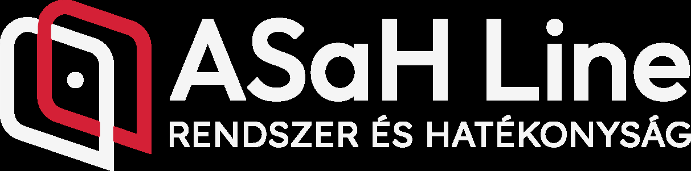
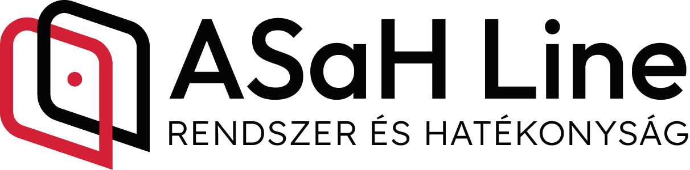

KAVOSZ · SZÉCHENYI KÁRTYA PROGRAM
SZKP Ügyintézők
Munkaprofil Elemzés
2026
Szervezetfejlesztés és üzemeltetési folyamatoptimalizálás a hatékonyságért
asahline.hu
01 / 41




Szervezetek működését valós operatív szinten megismerve, olyan fejlesztési és működésoptimalizálási megoldásokat alakítunk ki, amelyek mérhető hatékonyságnövekedést és stabilabb napi működést eredményeznek.
Feladatunk, hogy objektív elemzés és gyakorlati megvalósítás révén, hosszú távon fenntartható működési rendszereket alakítsunk ki. Nem csupán javaslatokat készítünk, hanem aktívan támogatjuk azok beépülését a szervezetek mindennapi működésébe.

A működési optimalizálás nem csak hatékonysági kérdés — hanem az üzleti növekedés feltétele.
Szervezet működési korlátait diagnosztizáljuk és újra tervezzük, a hatékonyság, és az eredményesség szolgálatába.
Nemcsak felmérünk és tanácsot adunk, hanem az elfogadott fejlesztési koncepciót be is illesszük a napi működésbe (implementáljuk), és fenntartható módon üzemeltetjük (stabilizálás).
Működés folyamat diagnosztizálása — a valódi értékteremtő és a kapacitást elapró tevékenységek azonosítása
Fejlesztési irányvonal azonosítása és javaslat.
Felmérés után 6 hónap áll rendelkezésre a bevezetésre (GDPR) hálózati szinten
Üzleti szemlélet, folyamatok beillesztése a napi működésbe — a változásokat azonnal, következetesen és szervezeti szinten kell implementálni
Fenntartható, kontrollált működés biztosítása hosszú távon
A munkavállalók által végzett napi munkatevékenység megfelel-e a KAVOSZ által megfogalmazott értékeknek, és az időmenedzsment szerkezete támogatja-e a hatékony és eredményes működést?
A KAVOSZ Zrt. megbízásából, az általuk kijelölt munkavállalók napi munkatevékenységéről értékelő elemzés készítése. A munkaprofil a munkavállaló napi munkavégzési folyamatainak feltérképezésével valósul meg.
Objektív és mérhető képet ad a szervezet működéséről, a munkatársak időfelhasználásáról, terhelésről és a valódi értékteremtő tevékenységről. Azonosításra kerülnek a szűk keresztmetszetek, hatékonysági veszteségek és fejlesztési lehetőségek.
A kijelölt munkavállalók munkavégzés-hatékonyságának mérése a napi munkavégzésük során, a tevékenységek és eszközrendszer azonosításával, dokumentálásával, előre bejelentett időszak alatt a teljes munkaidő folyamán.
A munkavállalói profilalkotás kiterjed az úgynevezett elsődleges feladatok vizsgálatára, azon tevékenységek összességére, mely a dolgozó munkaköri leírása tartalmazza az adott munkakör betöltésének feltételéül. A másodlagos feladatokra, melyek olyan tevékenységek, melyek nem közvetlenül a munkavállaló munkakörét érintik, de a tevékenység a szervezet munkafolyamatait támogatja. Az elsődleges feladatokon belül tartalmazza az egyes részfeladatokat, továbbá a feladat végrehajtásának körülményeit is.
| Iroda | Típus | Iroda | Típus |
|---|---|---|---|
| Kecskemét | Kamara | Veresegyháza | Kamara |
| Szeged | Kamara | Baja | VOSZ |
| Békéscsaba | Kamara | Szeged | VOSZ |
| Székesfehérvár | Kamara | Szolnok | VOSZ |
| Győr | Kamara | Budapest Késmárk út | VOSZ |
| Zalaegerszeg | Kamara | Kecskemét | VOSZ |
| Debrecen | Kamara | Dunakeszi | KAVOSZ Pont |
| Sárospatak | Kamara | Budapest, Gizella út | KAVOSZ Pont |
| Nyíregyháza | Kamara | Budapest Bég utca | KAVOSZ Pont |
| Budapest Krisztina K. | Kamara | Budapest Lajos utca | KAVOSZ Pont |
| Szekszárd | Kamara | Budapest Westend | KAVOSZ Pont |
| Kategória | Összes idő (h) | Napi idő (h) | Jelen 2026 | VOSZ 2025 |
|---|---|---|---|---|
| Elsődleges feladat | 386 h 53 min | 6 h 8 min | 80,30 % | 84,4 % |
| Másodlagos feladat | 47 h 42 min | 46 min | 9,90 % | 7,10 % |
| Rendelkezésre állás | 44 h 57 min | 43 min | 9,30 % | 8,50 % |
| Utazás | 2 h 14 min | 2 min | 0,50 % | 0,00 % |
| Teljes rögzített idő | 481 h 46 min | 7 h 39 min | 100,00 % | 100,00 % |
| Kategória | Összes idő (min) | Napi idő (h) | Jelen 2026 | VOSZ 2025 |
|---|---|---|---|---|
| Telefon | 37 h 41 min | 36 min | 17,80 % | 16,43 % |
| 15 h 45 min | 15 min | 7,40 % | 11,85 % | |
| Személyes | 149 h 16 min | 2 h 22 min | 70,30 % | 71,72 % |
| Online | 9 h 30 min | 9 min | 4,50 % | nincs adat |
| Teljes rögzített idő | 212 h 22 min | 3 h 22 min | 100,00 % | 100,00 % |
A hatékonyság javítása érdekében érdemes lehet vizsgálni:
Mindkét szervezetnél a személyes kapcsolat dominál. A telefonos kapcsolat hasonló funkciót lát el. Az e-mail jelenlét erőteljesebb. VOSZ esetén on-line kapcsolatot nem mértünk még!
| Kategória | Összes idő (min) | Napi idő (h) | Jelen 2026 | VOSZ 2025 |
|---|---|---|---|---|
| Ügyfél | 162 h 5 min | 2 h 34 min | 73,80 % | 74,74 % |
| KAVOSZ (belső) | 7 h 36 min | 7 min | 3,50 % | 9,89 % |
| Munkatárs | 16 h 12 min | 16 min | 7,40 % | 6,00 % |
| Partner (Finanszírozó) | 33 h 35 min | 32 min | 15,30 % | 9,38 % |
| Teljes | 219 h 28 min | 3 h 29 min | 100,00 % | 100,00 % |
| Kategória | Összes idő (min) | Napi idő (h) | Jelen 2026 | VOSZ 2025 |
|---|---|---|---|---|
| Egyeztetés | 58 h 48 min | 56 min | 31,74 % | Nincs adat |
| Megbeszélés | 7 h 28 min | 13 min | 7,23 % | Nincs adat |
| Ügyintézés / Fin. közvetítés | 113 h 5 min | 1 h 48 min | 61,03 % | Nincs adat |
| Teljes | 185 h 17 min | 2 h 9 min | 100,00 % | Nincs adat |
A kommunikációs kapcsolatok alapján az ügyintéző működése:
Pozitívumok
| Kategória | Összes idő (min) | Napi idő (h) | Jelen 2026 | VOSZ 2025 |
|---|---|---|---|---|
| Új ügyfél | 41 h 51 min | 40 min | 25,70 % | Nincs adat |
| Meglévő ügyfél | 121 h | 1 h 56 min | 74,30 % | Nincs adat |
| Teljes | 162 h 51 min | 2 h 36 min | 100,00 % | 100,00 % |
| Kategória | Összes idő (min) | Napi idő (h) | Jelen 2026 | VOSZ 2025 |
|---|---|---|---|---|
| Személy | 35 h 31 min | 34 min | 84,87 % | Nincs adat |
| Telefon | 4 h 43 min | 5 min | 11,27 % | Nincs adat |
| 1 h 9 min | 1 min | 2,75 % | Nincs adat | |
| Online | 28 min | 0,4 min | 1,11 % | Nincs adat |
| Teljes | 41 h 51 min | 40 min | 100,00 % | 100,00 % |
A szervezet a személyes értékesítési erősséget megtartva, fokozatosan digitalizálja az ügyfélszerzést és ügyfélkezelést, ezáltal:
| Csoport | Elsődleges feladatok | Jelen 2026 | Összesen | VOSZ 2025 | Összesen |
|---|---|---|---|---|---|
| Ügyintézés | Ügyintézés befogadással | 23,40 % | 32,4 % | 16,37 % | 39,29 % |
| Finanszírozás közvetítés | 4,60 % | 10,53 % | |||
| Finanszírozás felülvizsgálat | 4,40 % | 12,32 % | |||
| Operatív feladatok | Időpontegyeztetés | 1,90 % | 66,2 % | 1,45 % | 59,63 % |
| Ügyfél kezelés | 6,00 % | 3,17 % | |||
| Adminisztráció | 47,80 % | 40,72 % | |||
| Banki ügyintézés | 1,80 % | 2,03 % | |||
| Munkaszervezés | 8,70 % | 12,26 % | |||
| Ügyfél-portfólió | Ügyfélgondozás | 0,90 % | 1,5 % | 0,00 % | 1,15 % |
| Ügyfélszerzés | 0,60 % | 1,15 % | |||
| CRM – ügyfélkapcsolat rögzítés | 0,00 % | 0,00 % |
A szervezeteknél az adminisztráció dominálja a munkanapot. A VOSZ-nál a finanszírozás közvetítés erőteljesebb, ami az eltérő motivációs rendszerre visszavezethető. Az ügyfélgondozás – hosszú távú ügyfélkapcsolat a felmérés idején nem volt prioritás.
| Csoport | Feladat | Jelen 2026 | Összesen | VOSZ 2025 | Összesen |
|---|---|---|---|---|---|
| Operatív feladatok | Időpontegyeztetés | 1,90 % | 66,2 % | 1,45 % | 59,63 % |
| Ügyfél kezelés | 6,00 % | 3,17 % | |||
| Adminisztráció | 47,80 % | 40,72 % | |||
| Banki ügyintézés | 1,80 % | 2,03 % | |||
| Munkaszervezés | 8,70 % | 12,26 % | |||
| Ügyfél-portfólió | Ügyfélgondozás | 0,90 % | 1,5 % | 0,00 % | 1,15 % |
| Ügyfélszerzés | 0,60 % | 1,15 % | |||
| CRM – ügyfélkapcsolat rögzítés | 0,00 % | 0,00 % |
A működés jelenleg erősen operatív és adminisztratív jellegű. Az ügyintézők jelentős kapacitást fordítanak koordinációs feladatokra miközben:
A VOSZ esetében sem volt jellemző az ügyfélportfólió építés. Az operatív feladatok időráfordítás kedvezőbb aránya itt az ügyintézésre fordított nagyobb időarányt jelentett.
A jelentős eltérés az igényfelmérés és az előnyök és kockázatok folyamatában markáns. A jövőbeni kapcsolat egyik felmérés során sem prioritás, ami köszönhető a CRM rendszer hiányának, illetve a reaktív ügyfélkezelési modellnek.
| Ügyintézés jellege | Ügyint. (db) | Iroda 3 mnap (db) | Arány (%) |
|---|---|---|---|
| Személyes | 196 db | 9,33 db | 90,74 % |
| Telefon | 20 db | 0,95 db | 9,26 % |
| 0 db | 0 db | 0,00 % | |
| Online | 0 db | 0 db | 0,00 % |
| Összesen | 216 db | 10,28 db | 100,00 % |
A portfólió erősen a:
felé tolódik, míg a
jóval kisebb súlyú
| Termék | Ügyint. (db) | Iroda (db) |
|---|---|---|
| Folyószámla hitel | 110 db | 5,23 db |
| Beruházási hitel | 13 db | 0,61 db |
| Mikróhitel | 11 db | 0,52 db |
| Lízing | 27 db | 1,28 db |
| Likviditási hitel | 27 db | 1,28 db |
| Agrár beruházási hitel | 5 db | 0,23 db |
| Agrár forgóeszköz hitel | 2 db | 0,09 db |
| Agrár Kártya | 21 db | 1 db |
| Összesen | 216 db | 10,28 db |
A megfigyelés célja annak feltárása volt, hogy az ügyintézők milyen kompetenciákkal és fejlesztési potenciállal rendelkeznek a tanácsadói szerepkör irányába történő továbblépéshez.
A felmérés célja annak vizsgálata volt, hogy az ügyintézők rendelkeznek-e azokkal az alapkompetenciákkal, amelyekre építve hosszabb távon finanszírozási tanácsadói szerepkör alakítható ki. A vizsgálat segítségével azonosíthatók a meglévő erősségek, valamint a fejlesztendő területek, így megalapozható egy célzott kompetenciafejlesztési program.
| Terület | Standardizáltság | Digitalizáltság | Mérhetőség | Automatizáltság | Ügyfélélmény |
|---|---|---|---|---|---|
| Hitelügyintézés | 4.3 | 4.0 | 2.5 | 3.1 | 4.1 |
| Hitel-felülvizsgálat | 4.2 | 4.1 | 1.5 | 2.1 | 4.6 |
| Adatszolgáltatás | 4.0 | 2.3 | 1.5 | 0.6 | 4.0 |
| Adminisztráció | 4.5 | 2.1 | 1.1 | 2.3 | 2.6 |
| Tablet használat | 4.0 | 4.0 | 2.1 | 3.0 | 2.9 |
| Digitális időpontfoglalás | 4.6 | 1.8 | 0.9 | 4.5 | 4.7 |
A vizsgált területek többsége magas standardizáltságot mutat — egységes és szabályozott működésre utal, viszont inkább szokásjog, mint írott eljárásrend alapján. A szervezet működését erős szabályozottság és jó digitális alapok támogatják, ugyanakkor a mérhetőség fejlesztése szinte minden területen indokolt. A legnagyobb fejlesztési potenciál az automatizálás és adatvezérelt működés erősítésében rejlik.
Folyamatok átláthatóak, kiszámíthatóak, támogatást biztosítanak
A digitális időpontfoglaló kényelmes és modern ügyfélkapcsolati megoldást jelent
Időhatékony az ügyintézés
Felülvizsgálat során megfelelő tájékoztatás és biztonságérzet, de proaktív keresztértékesítési lehetőségek kihasználatlanok
Kevés strukturált adat áll rendelkezésre a vezetői elemzésekhez és a fejlesztési lehetőségek azonosítására. A mérhetőség hiánya rendszerszintű problémaként azonosítható — szinte minden folyamatterületen kritikus értéket mutat.
| Terület | Standardizáltság | Digitalizáltság | Mérhetőség | Automatizáltság | Ügyfélélmény |
|---|---|---|---|---|---|
| Kapcsolatfelvétel | 1.8 | 1.0 | 0.8 | 1.4 | 1.4 |
| Igényfelmérés | 1.4 | 1.6 | 0.5 | 0.1 | 2.4 |
| Tanácsadási folyamat | 2.2 | 1.5 | 1.7 | 1.0 | 4.5 |
| Adminisztráció (CRM) | 2.7 | 2.5 | 0.8 | 0.8 | 1.6 |
| Lezárás | 1.3 | 2.1 | 1.2 | 0.8 | 4.0 |
| Utókövetés / ügyfélgondozás | 0.8 | 0.1 | 0.5 | 0.7 | 1.8 |
A személyes ügyintézés pozitív ügyfélélményt biztosít, azonban a folyamatok alacsony mérhetősége és automatizáltsága hosszú távon korlátozhatja a skálázhatóságot és a hatékonyságot. A legnagyobb fejlesztési lehetőség az utánkövetési folyamatok, a CRM-rendszer bevezetése, valamint az adatvezérelt működés kialakítása terén azonosítható. Az ügyintézés folyamata irodánként egyedi, egységes iránymutatás nem jellemző.
Kapcsolatfelvétel — ügyfélszerzés: a hatékonyság nagymértékben egyéni gyakorlatoktól függ
Igényfelmérés: folyamat strukturáltsága korlátozott, a személyes odafigyelés kompenzál
Tanácsadási folyamat: magas ügyfélélmény, de háttérfolyamatok (mérhetőség, automatizáltság) kritikusak
Adminisztráció / CRM: nem ügyfélkezelő rendszerben dolgoznak → ügyfélgondozás nem valósulhat meg
Utókövetés: kritikusan alacsony minden dimenzióban — rendszerszintű fejlesztés szükséges
| Adminisztráció optimalizálás | Egységes munkafolyamatok | Kapacitástervezés | Kommunikáció | CRM alapok | |
|---|---|---|---|---|---|
| Működési hatékonyság és adminisztráció |
|
|
|
| — |
| Ügyfél onboarding | Ügyfél elégedettség | Hibrid ügyintézés | Proaktív értékesítés | Készség és képességfejl. | |
|---|---|---|---|---|---|
| Ügyfélélmény — Finanszírozási Tanácsadó | — | — | — |
|
|
| Karrierút | Teljesítményalapú modell | Adatvezérelt működés | Munkavállalói onboarding | Motiváció | |
|---|---|---|---|---|---|
| Humán működés és ösztönzési rendszer | — |
|
|
|
|
| Adminisztráció optimalizálás | Egységes munkafolyamatok | Kapacitástervezés | Kommunikáció | CRM alapok | |
|---|---|---|---|---|---|
| Működési hatékonyság és adminisztráció |
|
| — | — |
|
| Ügyfél onboarding | Ügyfél elégedettség | Hibrid ügyintézés | Proaktív értékesítés | Készség és képességfejl. | |
|---|---|---|---|---|---|
| Ügyfélélmény — Finanszírozási Tanácsadó |
|
|
|
|
|
| Karrierút | Teljesítményalapú modell | Adatvezérelt működés | Munkavállalói onboarding | Motiváció | |
|---|---|---|---|---|---|
| Humán működés és ösztönzési rendszer |
|
|
|
|
|
| Adminisztráció optimalizálás | Egységes munkafolyamatok | Kapacitástervezés | Kommunikáció | CRM alapok | |
|---|---|---|---|---|---|
| Működési hatékonyság és adminisztráció | — | — | — | — |
|
| Ügyfél onboarding | Ügyfél elégedettség | Hibrid ügyfélkezelés | Proaktív értékesítés | Készség és képességfejlesztés | |
|---|---|---|---|---|---|
| Ügyfélélmény — Finanszírozási Tanácsadó |
| — |
| — |
|
| Karrierút | Teljesítményalapú szervezeti modell | Adatvezérelt működés | Munkavállalói onboarding | Motiváció | |
|---|---|---|---|---|---|
| Humán működés és ösztönzési rendszer |
|
|
| — |
|
Fejlesztési ajánlások a KAVOSZ számára
| Ajánlás | Stratégiai cél | Üzleti lehetőség | Várható eredmény |
|---|---|---|---|
| VOSZPORT integráció |
|
|
|
| Portfólióbővítés |
|
|
|
A számok nem azt mutatják meg, hogy mennyit dolgozunk. Azt mutatják meg, hogy mire megy el az időnk.
Amikor az adminisztráció megelőzi a tanácsadást, a változás már nem lehetőség, hanem üzleti szükségszerűség.


Az irodák működésének jelentős részét az adminisztratív és működési feladatok kötik le, miközben egyre nagyobb igény mutatkozik: